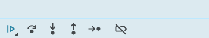

编写于2025年05月11日 修订于2025年10月28日 | 来源：https://www.myouone.xyz
变量提升
建议
单引号、双引号、反引号，推荐单引号。
模板字符串：拼接字符串和变量（必须用反引号）
`我今年${age}岁`
如果一个变量确定要赋值为一个对象，那么可以先用null来初始化。
console.log(typeof obj);
Number('1') parseInt('1.1') parseFloat('1.1')
右键点击浏览器页面 → 检查 → Sources → 找到要打断点的源码 → 找到要打断点的行数，在行号前边点击打断点 → 刷新浏览器页面

可以点击这些按钮进行调试。
// 新增 arr.push(元素1, 元素2, ......元素n); // 将一个或者多个元素添加到数组末尾，并返回新数组的长度。 arr.unshift(元素1, 元素2, ......元素n); // 将一个或者多个元素添加到数组开头，并返回新数组的长度。 // 删除 arr.pop(); // 从数组中删除最后一个元素，并返回该元素的值。 arr.shift(); // 从数组中删除第一个元素，并返回该元素的值。 arr.splice(start, delCount); // start：要删除的元素的第一个位置（从0开始计数） delCount：删除元素的个数，可以省略，省略时删除到结尾。
function fn () {}
function () {}，匿名函数无法直接使用，有两种使用方式：
定义方式：
对象由两部分组成，一部分是属性，另一部分是方法。
let obj = { attr1: 'aaa', attr2: function () {} }
遍历对象
for (let k in obj) { console.log(obj.k); }
内置对象Math
学习视频是b站《黑马程序员前端JavaScript入门到精通全套视频教程》。
更多信息可参考权威网站。